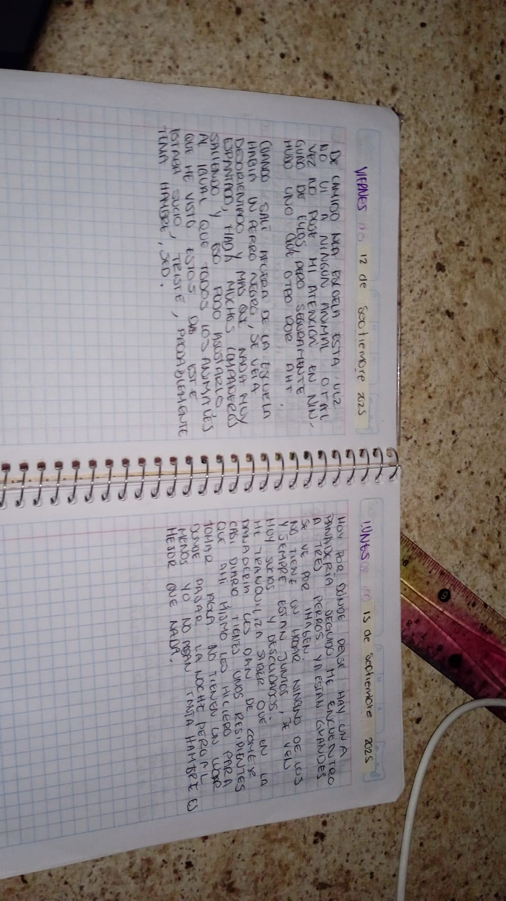
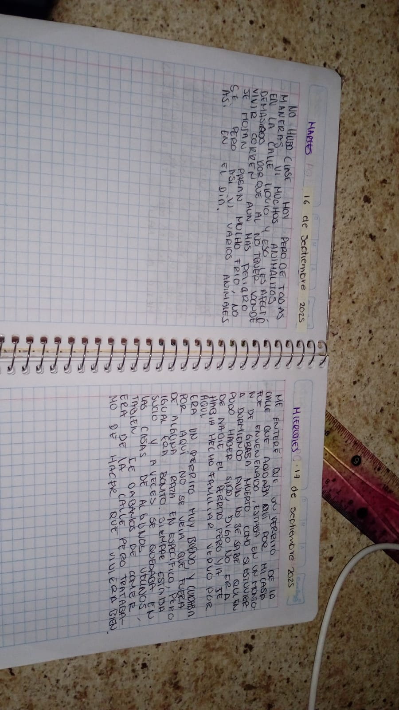
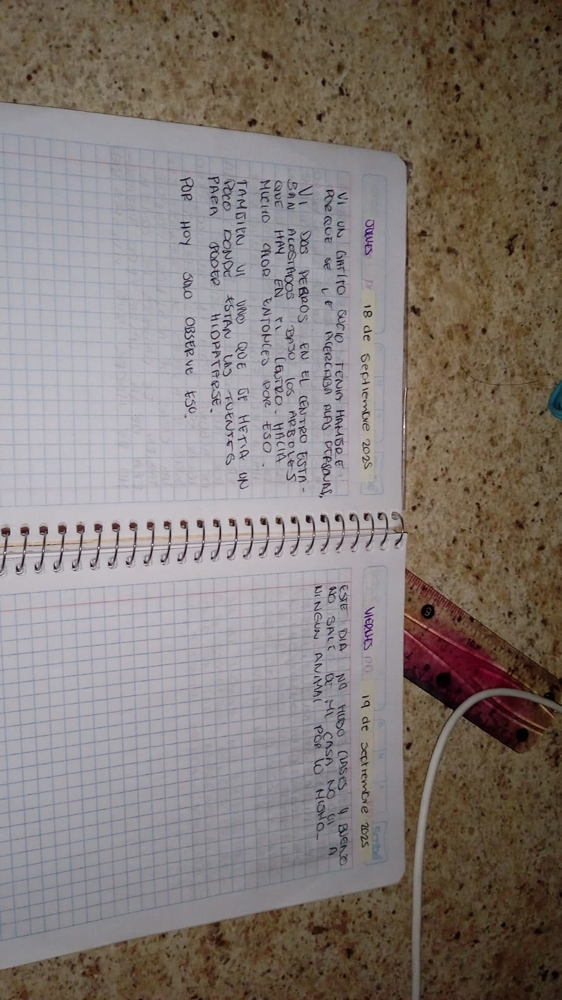
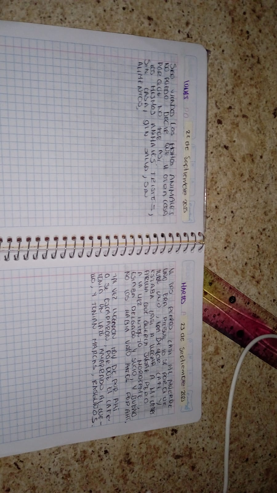
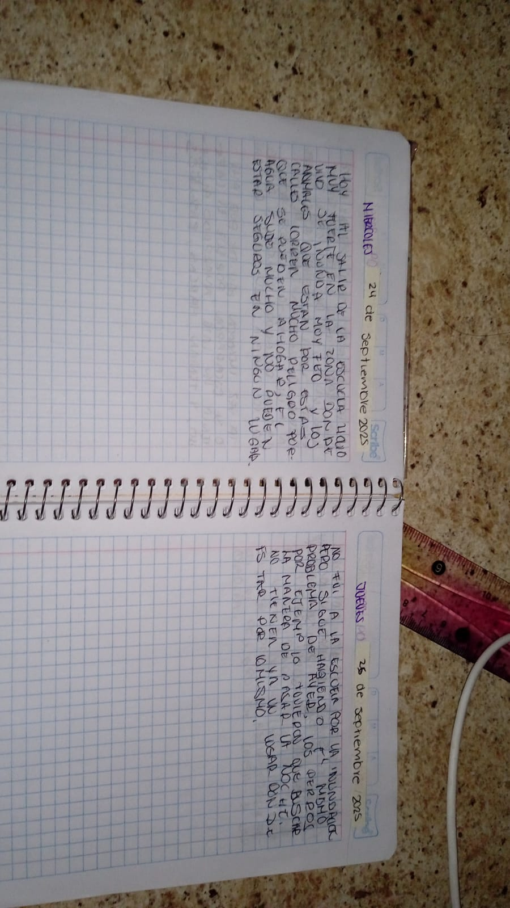
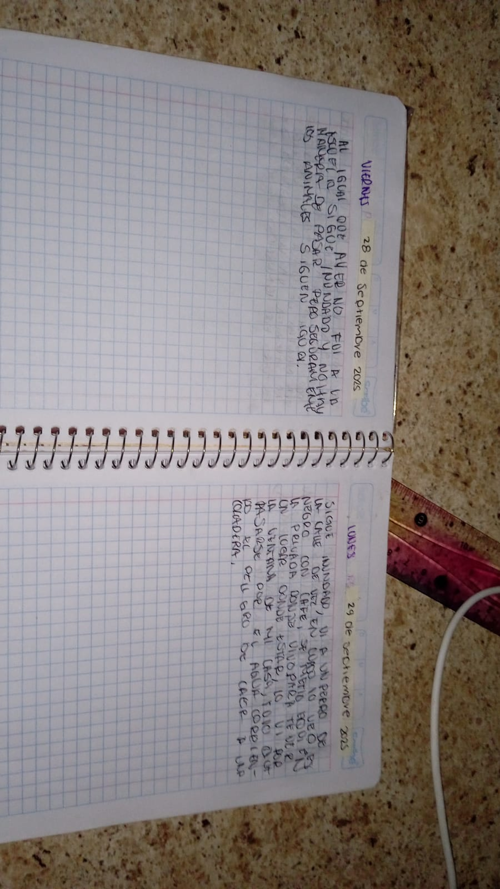

Diarios reales contra el Maltrato Animal
Estas son las anotaciones escritas a mano, día a día. Cada historia es 100 % real.
Ayúdanos con Bizum al [tu móvil]
DIARIOS REALES
30 septiembre 2024 – Caso Nino
Perro muy flaco atado 24h sin comida ni agua. El dueño amenaza con matarlo. Llamada a policía.
1-2 octubre 2025 – 10 perros encerrados
Más de 10 perros sin agua ni comida, con sarna y heridas. Fueron decomisados.
Más casos

Adopción
Próximamente…
Donaciones
Puedes ayudar con Bizum al [tu móvil]
Encuestas
Próximamente…
Reflexión
Cada animal cuenta. Tú puedes cambiar su historia.
Vídeos
Próximamente…
Fotos
Próximamente…